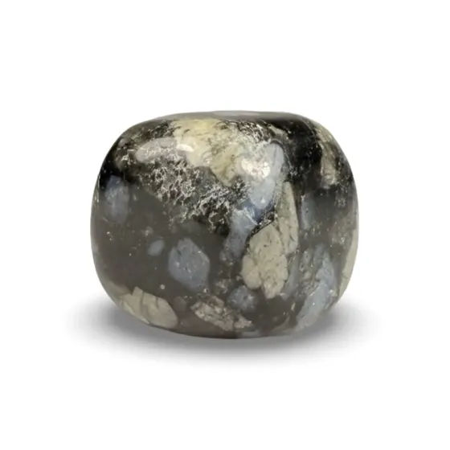

Mineral Grimoire
 Glaucophane
Glaucophane
Appearance
Blue-grey with white and gold. Mottled, sparkling opaque stone.
Origin
Mountainous regions of Europe. Rare mineral.
Attributes
A blue amphibole, Glaucophane looks like a galaxy hanging in outer space with twinkling stars. The name means 'blue appearing' and it is a sodium-rich metamorphic rock, which means that it has undergone great pressure in its long life. It positively fizzes in your hand. Placed over the third eye it opens metaphysical sight and over the throat chakra it enables you to communicate what you see and to share your spiritual vision. Over the soma chakra this stone takes you travelling to meet star people and find your soul's home. It makes a useful anchoring stone for a cosmic anchor hooked in the centre of galaxy which conveys you home safely to your body, no matter how far you may travel.
This stone is excellent wherever you need clarification and it can help in finding solutions to problems that have formerly been intractable. Meditate with it or place it under your pillow and ask for an insightful dream that shows you what underlies such situations.
Healing
Glaucophane is a powerful all round healer and well-being enhancer. It particularly assists the throat and diseases that arise from repressed thoughts and feelings or experiences that have never been spoken about.
Position
Hold, grid, place or disperse gem essence into the aura, especially around the throat and head.